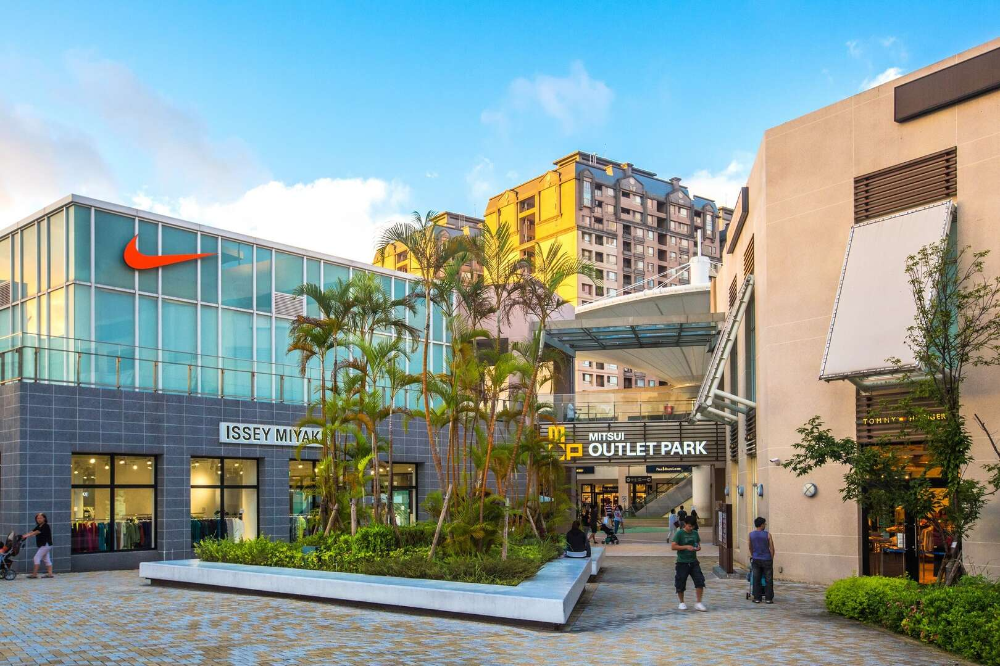

|  | |
|
|
| MITSUI OUTLET PARK 林口 | 美麗華百樂園 | 微風南山 | 研習心得 |

環保與可持續性：
採用了多項環保技術和材料，旨在減少能耗和碳排放。
建築內設有雨水回收系統、節能照明和高效空調系統，提升能源利用效率。
抗震結構：
台北101購物中心所在的台北101大樓擁有先進的抗震技術，包括巨型阻尼器，能有效抵禦地震和強風。
建築基礎深植於地下，採用了多項加固技術，確保結構的穩定性和安全性。
建材選擇：
使用高強度鋼材和混凝土，確保建築的耐用性。
大面積的玻璃幕牆設計，不僅提供良好的視野，還有助於自然光的引入，提升建築的節能效果。
施工階段：
工程分為多個階段，包括基礎施工、結構施工、外牆和內部裝修等。
施工過程中，採用了多項先進的施工技術和管理方法，確保工程進度和質量。
安全與管理：
嚴格遵守建築安全規範，確保工地安全和工人健康。
施工管理上，採用了高效的項目管理系統，確保各階段工作的有序進行。